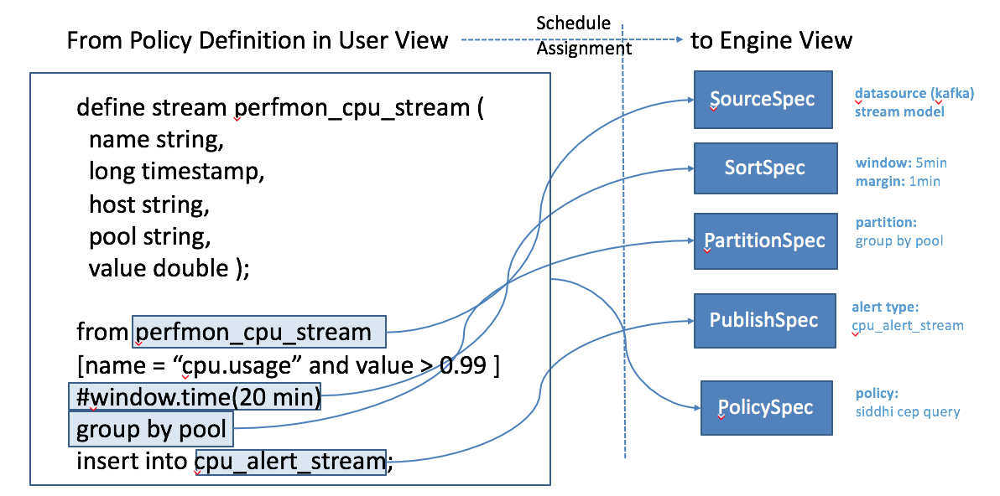
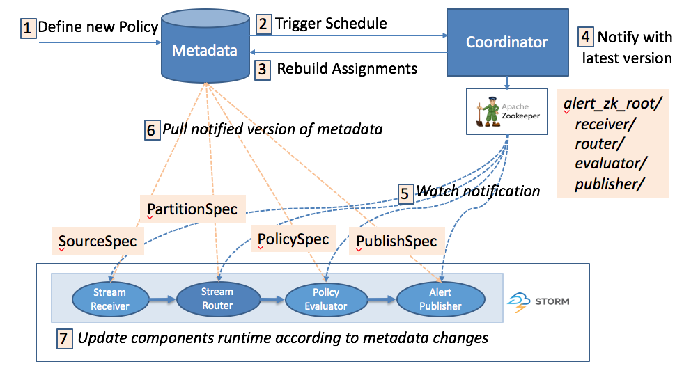

Alert Engine
Distributed Real-time Streaming
Eagle Alert Engine is buit on open source realtime streaming infrastrcuture like Apache Storm as default execution engine and Apache Kafka as default messagig Bus.

Declarative Policy Evaluator
Eagle supports declarative policy with SQL (CEP) on distributed streaming environment.

Here are some typical examples:
-
Example 1: Alert if hadoop namenode capacity usage exceed 90 percentages
from hadoopJmxMetricEventStream [metric == "hadoop.namenode.fsnamesystemstate.capacityused" and value > 0.9] select metric, host, value, timestamp, component, site insert into alertStream; -
Example 2: Alert if hadoop namenode HA switches
from every a = hadoopJmxMetricEventStream[metric=="hadoop.namenode.fsnamesystem.hastate"] -> b = hadoopJmxMetricEventStream[metric==a.metric and b.host == a.host and a.value != value)] within 10 min select a.host, a.value as oldHaState, b.value as newHaState, b.timestamp as timestamp, b.metric as metric, b.component as component, b.site as site insert into alertStream;
Dynamic Coordinator

Application Framework
Eagle has multiple distributed real-time frameworks for efficiently developing highly scalable monitoring applications.
Application
An "Application" or "App" is composed of data integration, policies and insights for one data source.
Application Descriptor
An "Application Descriptor" is a static packaged metadata information consist of
- Basic: type, name, version, description.
- Application: the application process to run.
- Configuration Descriptor__: describe the configurations required by the application when starting like name, displayName, defaultValue Description, required, etc. which will automatically be visualized in configuration editor.
- Streams: the streams schema the application will export.
- Docs: application specific documentations which will be embedded in necessary area during the whole lifecyle of application management.
Here is a ApplicationDesc example of JPM_WEB_APP
{
type: "JPM_WEB_APP",
name: "Job Performance Monitoring Web ",
version: "0.5.0-incubating",
description: null,
appClass: "org.apache.eagle.app.StaticApplication",
jarPath: "/opt/eagle/0.5.0-incubating-SNAPSHOT-build-20161103T0332/eagle-0.5.0-incubating-SNAPSHOT/lib/eagle-topology-0.5.0-incubating-SNAPSHOT-hadoop-2.4.1-11-assembly.jar",
viewPath: "/apps/jpm",
providerClass: "org.apache.eagle.app.jpm.JPMWebApplicationProvider",
configuration: {
properties: [{
name: "service.host",
displayName: "Eagle Service Host",
value: "localhost",
description: "Eagle Service Host, default: localhost",
required: false
}, {
name: "service.port",
displayName: "Eagle Service Port",
value: "8080",
description: "Eagle Service Port, default: 8080",
required: false
}]
},
streams: null,
docs: null,
executable: false,
dependencies: [{
type: "MR_RUNNING_JOB_APP",
version: "0.5.0-incubating",
required: true
}, {
type: "MR_HISTORY_JOB_APP",
version: "0.5.0-incubating",
required: true
}]
}
Application Provider
An "application provider" in fact is a package management and loading mechanism leveraging Java SPI.
For example, in file
META-INF/services/org.apache.eagle.app.spi.ApplicationProvider
place the full class name of an application provider:
org.apache.eagle.app.jpm.JPMWebApplicationProvider
Metric Storage

Persistence ORM Framework
Eagle nativelly provides a light-weight ORM Framework for HBase/RDMBS, supporting easily defining persistence data model with java annotation.
For example as below:
@Table("HbaseTableName")
@ColumnFamily("ColumnFamily")
@Prefix("RowkeyPrefix")
@Service("UniqueEntitytServiceName")
@JsonIgnoreProperties(ignoreUnknown = true)
@TimeSeries(false)
@Indexes({
@Index(name="Index_1_alertExecutorId", columns = { "alertExecutorID" }, unique = true)})
public class AlertDefinitionAPIEntity extends TaggedLogAPIEntity{
@Column("a")
private String desc;
SQL-Like REST Query Language
Eagle provide SQL-Like REST query language on NoSQL Model. For example like
/rest/entities?query=UniqueEntitytServiceName[@site="sandbox"]{*}
Eagle Query API
List Query
ListQuery ::= "/" <EntityName> "?" <KeyValue> { "&" <KeyValue> }
KeyValue ::= [ <Filter> | <Output> ]
Filter ::= [ <TagFilter> | <FieldFilter> ]
Output ::= [ <OuputTag> | <OutputField> ]
TagFilter ::= "tagNameValue" "=" <Condition> <!= while used in URL, the equal "=" character has to be URL encoded with http://www.w3schools.com/tags/ref_urlencode.asp -->
FieldFilter ::= "fieldNameValue" "=" <Condition> <!-- not implemented yet, field filter has to be pushed down to hbase column filters -->
Condition ::= <Identifier> <OP> [ <Identifier> | <RegExpression> ]
OutputTag ::= <Identifier>
OutputField ::= <Identifier>
Identifier ::= <Character> { <Identifier> }
OP ::= [ "=" | "=~" ] <!-- =~ means regular expression matching, not supported yet as of now -->
RegExpression ::= <!-- java supported regular expressions http://docs.oracle.com/javase/7/docs/api/java/util/regex/Pattern.html , not yet supported in version 0.9 as of now -->
EntityName ::= [ "HdfsService" | "HBaseService" | "MRService" | "Host" | "Disk" | "CPU" | "Config" | "Alert" | "Action" | "Event" | "MRJob" | "MRTask" | "HBaseRPC" | "HdfsRPC" ]
Aggregation Query
AggregationQuery ::= "/" <EntityName> "?" <Filter> { "&" <Filter> } "&" <AggregationField> { "&" <AggregationField> } <AggregationFunction> { "&" <AggregationFunction> } [ "&" <AggregationFilters> ]
AggregationField ::= "gb" "=" <Identifier>
AggregationFunction ::= "function" "=" <Identifier>
AggregationFilters ::= "having" "=" <BooleanExpression>
BooleanExpression ::= <!-- as of now, boolean expression has not been yet implemented -->
Bucket Query
BucketQuery ::= "/" <EntityName> "?" <Filter> { "&" <Filter> } "&" <BucketField> { "&" <BucketField> } <BucketLimit> { "&" <BucketLimit> }
BucketField ::= "BucketField" "=" <Identifier>
BucketLimit ::= <Number>
Rowkey Query
RowkeyQuery ::= "/" <RowkeyPath> "?" <KeyFilter> "&' <TableFilter> "&" <ColumnFamilyFilter> "&" [ "all=true" | <FieldSelection> ]
RowkeyPath ::= "rowkey"
KeyFilter ::= "key" "=" <Identifier>
TableFilter ::= "table" "=" <Identifier>
ColumnFamilyFilter ::= "cf" "=" <Identifier>
FieldSelection ::= <Field> { <FieldSelection> }
Field ::= "Field" "=" <Identifier>
Pagination
Pagination ::= <CollectionQuery> "&" <PageSize> "&" <StartRowkey>
PageSize ::= "pageSize" "=" <Number>
StartRowkey ::= "startRowkey" "=" <Identifier> <!-- client application should set the rowkey where the query will start with. rowkey should be null if the query starts from the beginning -->
Sorting
Sort ::= [ <AggregationQuery> | <CollectionQuery> ] "&" <SortSpecs>
SortSpecs ::= <SortSpec> "&" { <SortSpecs> }
SortSpec ::= "st" "=" <SortField> = <SortOrder>
SortField ::= <Identifier>
SortOrder ::= [ asc | desc ]
Union
UnionQuery ::= <Query> { "+" <Query> } <!-- as of now this syntax is not yet implemented, but union is used by letting service knowing it's a union -->
Query ::= [ <CollectionQuery> | <AggregationQuery> | <BucketQuery> ]
Join
JoinQuery ::= <Query> { "^" <Query> } <!-- as of now this syntax is not yet implemented, but union is used by letting service knowing it's a join -->
HBase Rowkey Design
Optimized Rowkey design for time-series data, optimized for metric/entity/log, etc. different storage types
Rowkey ::= Prefix | Partition Keys | timestamp | tagName | tagValue | …
Metric Rowkey Design
Rowkey ::= Metric Name | Partition Keys | timestamp | tagName | tagValue | …
Entity Rowkey Design
Rowkey ::= Default Prefix | Partition Keys | timestamp | tagName | tagValue | …
Log Rowkey Design
Rowkey ::= Log Type | Partition Keys | timestamp | tagName | tagValue | …
Rowvalue ::= Log Content
Secondary Index Support
Eagle supports to define secondary index with annotation with @Index. For example:
@Indexes(, unique = true/false)})
Native HBase Coprocessor
org.apache.eagle.storage.hbase.query.coprocessor.AggregateProtocolEndPoint
UI Framework
Eagle UI is mainly consist of following parts:
- Eagle Main UI
- Eagle App Portal/Dashboard/Widgets
- Eagle Customized Dashboard